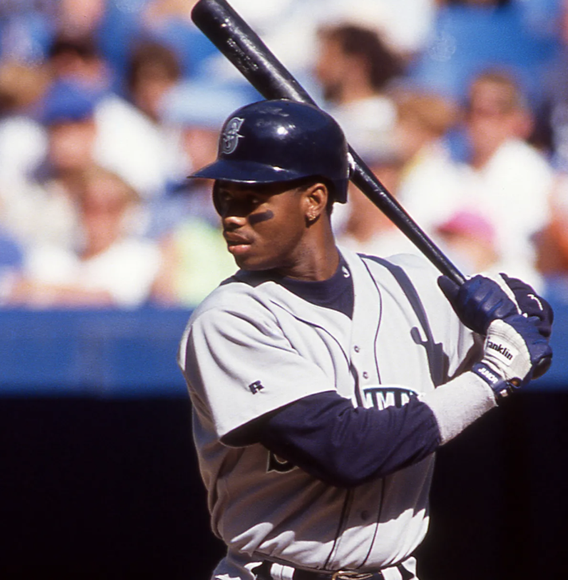

Ever since I was baby I dreamet of being a writer and putting my thoughts in other people's brain. Now it's happening with my cool wbe log. The power of internet is awesome and scary. Thank you for visiting and I hope you likemy thoughts!
Ken Griffey Jr. is a baseball player for the Seattle Mariners. He hits big home runs and has a big smile, that's nice! He is the coolest player in the Major Leagues because he is so talented. Last year he hit 56 home runs (a lot!) and won the American Leauge MVp award.
Sometime I dream that him and I play catch. Wow! Great throw Ken Griffey! He let''s me say his name without the Junior.
Baseball is important and allows me to believe in God.
There are two W's in the uniform resorce locator, it should say 'weblog' not 'wweblog' and I don't know how to change. Sorry!
My thought are sacred to me. Now you have them and we are one :)
Copyright © 1998 - Matsushita Electronics Corporation.